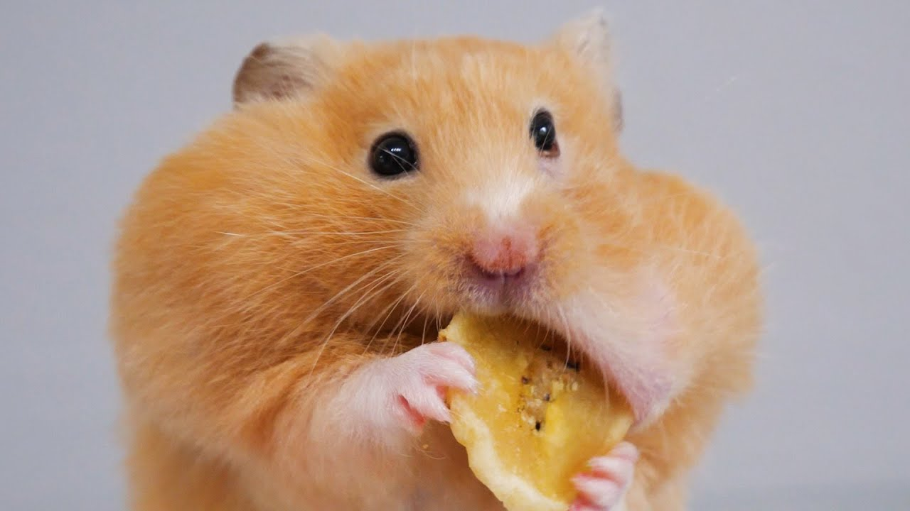

Как содержать сирийских хомяков?
Сирийские хомячки пользуются огромной популярностью, как в нашей стране, так и по всему миру. Скорее всего, это связано с неприхотливостью в содержании, стойкостью иммунитета хомячков, а также привлекательным внешним видом.
Сколько хомяков заводить?
Особенности содержания заключаются в том, что эти животные предпочитают вести обособленный образ жизни, при этом привязываются к определенной территории, которые они бесстрашно защищают. Это необходимо знать для того, чтобы определиться с количеством животных, которых планируется завести. Поэтому их нельзя содержать даже парами, не говоря уже о целых группах животных. При этом, следует отметить, что существует вид социальных хомяков – это хомяки Роборовского, которых без проблем можно содержать целыми группами.
Выбор и наполнение клетки
Сирийские хомячки отличаются сравнительно крупными размерами, поэтому маленькая клетка для содержания такого питомца не подойдет. Кроме этого, размеры клетки должны быть такими, чтобы в нее можно было поместить колесо с различными лабиринтами, а также другие принадлежности.
Оптимальным вариантом можно считать клетку с размерами 37х27 см и высотой около 36 см. Если в клетке два этажа, то это еще лучше, поскольку она более удобная и более комфортная для животного.
К особенностям клетки следует отнести:
- Не обязательно, чтобы клетка имела несколько этажей, а главное, чтобы ее размеры были оптимальными.
- Размеры не должны быть меньше, чем 50х30 см.
- Если клетка маловата по размерам, то животное может страдать на недостаток движений, что приводит к ожирению.
- Второй этаж должен располагаться не ниже 30 см от уровня дна клетки.
- Размеры дверцы должны быть оптимальными, но не маленькими.
- Расстояние между прутьями – не больше 1 см.
- Лучше обзавестись клеткой, у которой сплошной поддон, а не сетчатый.
- Жилище хомячка должно обустраиваться специальным колесом, которое будет выступать в роли гимнастического снаряда, а дно засыпается опилками, которые способны впитывать влагу, а также посторонние запахи.
Важный момент! Чем больше в клетке будет находиться игровых элементов, в виде колеса, различных лазов, ступенек и лесенок, тем активнее будет вести себя домашний питомец.
- Не следует застилать дно клетки ватой или бумагой. Прекрасный игровой элемент для хомячка в его жилище – это деревянная коряга с гладкой поверхностью.
Правила ухода и гигиены
Содержание домашнего хомячка требует проведения раз в неделю генеральной уборки всего жилища. Для этого снимается верхняя часть клетки, и удаляются остатки пищи, а также подстилка. В качестве ежедневных мероприятий желательно осуществлять частичную чистку, проводя замену оставшегося корма и пришедшей в негодность подстилки.
После проведенной генеральной уборки в обязательном порядке проводятся мероприятия по дезинфекции, применяя безопасные вещества, после чего клетка насухо протирается х/б тканью или бумажным полотенцем. Кроме этого, все дополнительные элементы клетки, в том числе миски и поилки, требуют регулярного мытья. Чистота – это залог здоровья домашнего любимца.
Чем кормить сирийского хомяка

Правильное содержание в домашних условиях таких грызунов, как сирийские хомячки, заключается в том, чтобы обеспечить животное сбалансированным рационом питания, с включением различных лакомств.
Использование уже готовых, покупных рационов питания, можно считать идеальным вариантом, поскольку в них содержится достаточное количество питательных веществ, так необходимых для нормальной жизнедеятельности хомячков. При этом нужно следить за тем, чтобы корм выдавался не больше необходимых порций.
В составе кормов должны находиться:
- Белки – не больше 23 процентов.
- До 6 процентов жиров.
- В пределах 10 процентов клетчатки.
Основными продуктами питания хомячка являются твердые зерновые культуры, в виде пшеницы, овса и проса. Если домашний питомец не доел и оставил в кормушке пищу, то ее нужно тут же удалить, чтобы домашний питомец не смог отравиться продуктами питания, пришедшими в не годность.
Важно знать! Для кормления этих животных противопоказаны такие продукты, как цитрусовые, подсолнух (семечки), капуста, шоколад и ряд других сладких продуктов, в том числе молочные и кисломолочные продукты, за исключением сыра.
Как правило, у грызунов зубы растут всю жизнь, поэтому необходимо создать условия, чтобы животное их стачивало. Для этого хомячку дают веточки различных фруктовых деревьев, таких, как яблоня и вишня, а также включают в рацион питания такие продукты, как яблоки, морковка, хурма, кабачки, репа и малина.
Вернуться назад